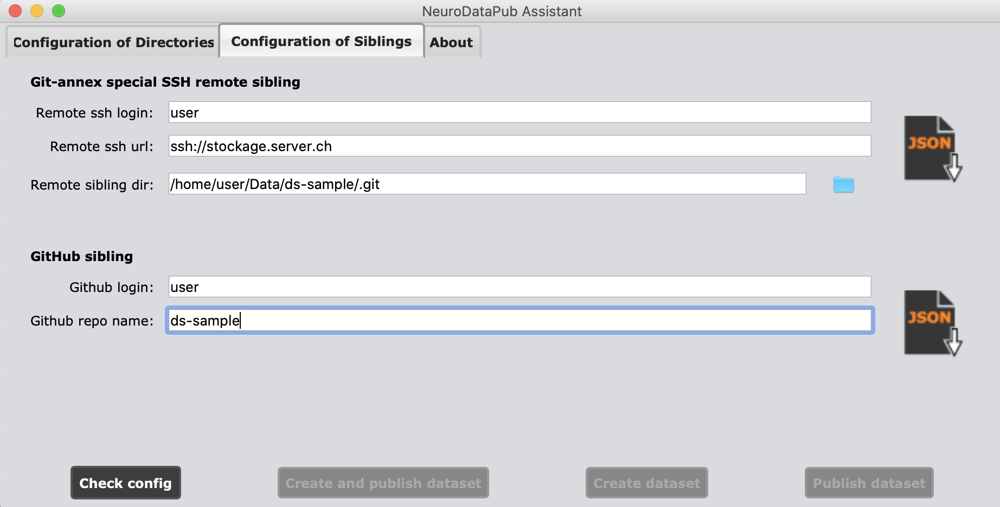
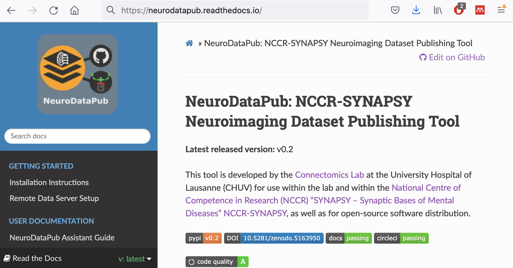

Adopting Datalad for Sharing Neuroimaging Data
Introduction to NeuroDataPub
31 08 2021


What is NeuroDataPub?
NeuroDataPub: NCCR-SYNAPSY neuroimaging data publishing tool
- Tool written in Python and built on top of Datalad and git-annex to manage and share, privately or publicly, a dataset repository on GitHub with files annexed on a SSH data server.

The aims of NeuroDataPub
- Support neuroimaging dataset catalogue creation and lower the barriers to adopt Datalad in order to fully implement Synapsy Neuroimaging Data Management Plan.
Easy to install
- Provide a Conda environment with all dependencies installed (such as Datalad and extensions, git-annex) that can be easily created as follows:
$ conda env create -f "https://github.com/NCCR-SYNAPSY/neurodatapub/raw/main/conda/environment.yml" - Neurodatapub is available on the Python Package Index (PyPI) and can be easily installed.
Easy to use
- Come with a graphical user interface, aka the NeuroDataPub Assistant
$ conda activate neurodatapub-env (neurodatapub-env)$ neurodatapub --gui - Created to facilitate:
- sibling configuration,
- creation of the JSON sibling configuration files,
- execution of NeuroDataPub
Reduce the risk of errors
- Execution of NeuroDataPub in 3 modes:
- creation and publication of a datalad dataset,
- creation of a datalad dataset only,
- publication of an existing datalad dataset only.
- Control the configurations before enabling execution.
- Use JSON schema to validate the JSON sibling configuration files.
How to get started
- Instructions for installation and usage available on ReadTheDocs

https://neurodatapub.readthedocs.io
How to interact with a dataset published by NeuroDataPub
Install a local copy of the published dataset (no content)
- Configure ssh by adding the following lines to the ~/.ssh/config file:
This will indicate automatically to ssh which user login to use to connect.Host stockage.server.ch HostName stockage.server.ch User user - Clone with Datalad the GitHub dataset repository:
(neurodatapub-env)$ datalad clone "git@github.com:NCCR-SYNAPSY/ds-NeuroDataPubTest13.git" - Note: At this stage, the dataset does not contain any annexed files. The ssh information will be used when establishing the ssh connection to download the actual annexed content from the data storage server.
Download the annexed file content on demand
- For instance, one can download the annexed T1w image from the SSH data storage server with datalad get command the GitHub dataset repository:
(neurodatapub-env)$ datalad get -d "ds-NeuroDataPubTest13" "sub-01/ses-01/anat/*T1w.nii.gz" - Note: If annexed files are published on a SSH data storage server, one might have an account to access it and be able to download the image.
How to update the publish a new version of the dataset
- Update the CHANGES of the BIDS dataset where you will refer to the new dataset version, for instance:
1.0.2 2021-08-27 - Fix participants.tsv - Save the state of the dataset with datalad save with the -t tag which specifies the new version and push the changes to GitHub sibling with datalad push:
(neurodatapub-env)$ datalad save -d "ds-NeuroDataPubTest13" -m 'Brief change description' -t 1.0.2 (neurodatapub-env)$ datalad push -d "ds-NeuroDataPubTest13" --to github